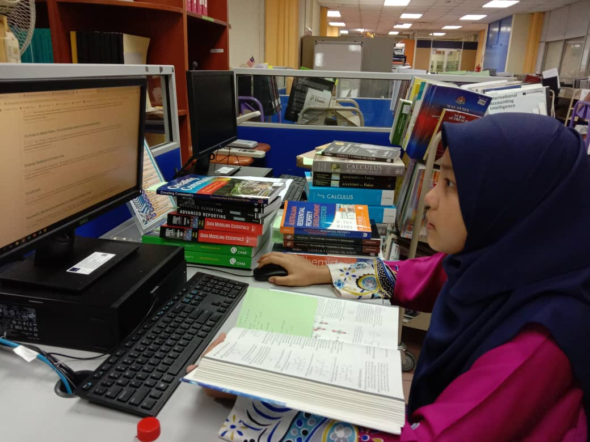
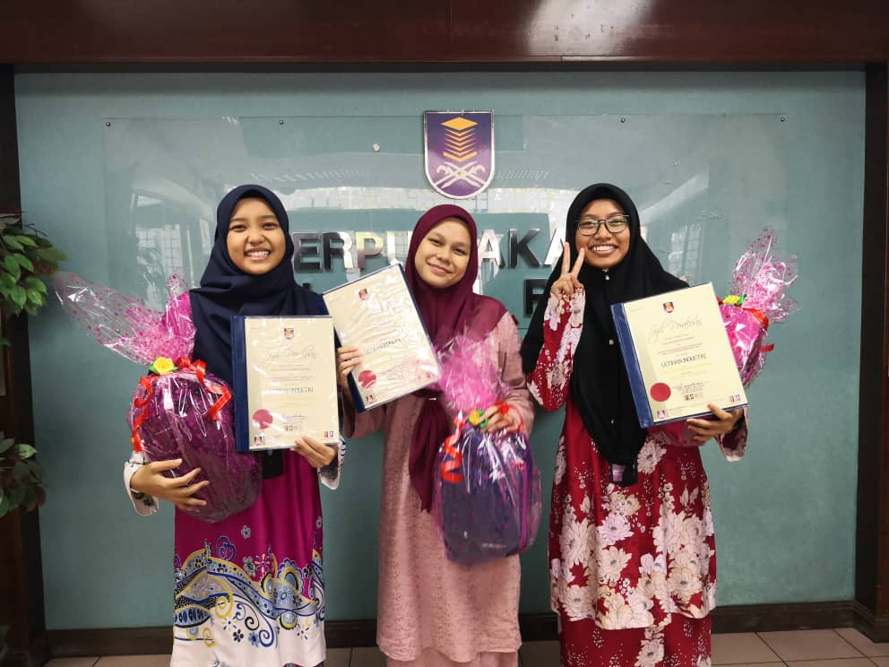
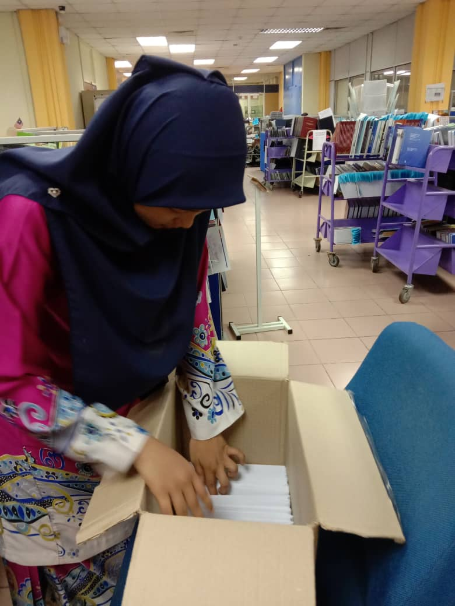

1) Doing industry training at PTAR1
2) Be Volunteered to run the program at UITM
"This Website is Develop for Introduction to Web Content Management and Design (IMD311).
Any information or material are used for educational purpose only".
- I have been doing industrial training in library UITM Shah Alam for 2 months at the end of semester 3. I have gained a lot of new knowledge and information that can be used in my life.



- I once volunteered to help with programs run by the Islamic affairs club at UITM such as leadership activities program. With this kind of program, it gives me a lot of confidence in dealing with the public